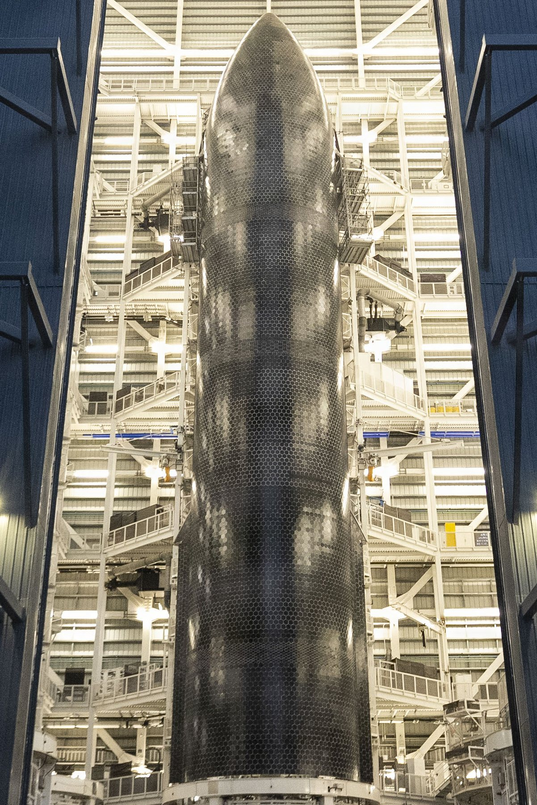
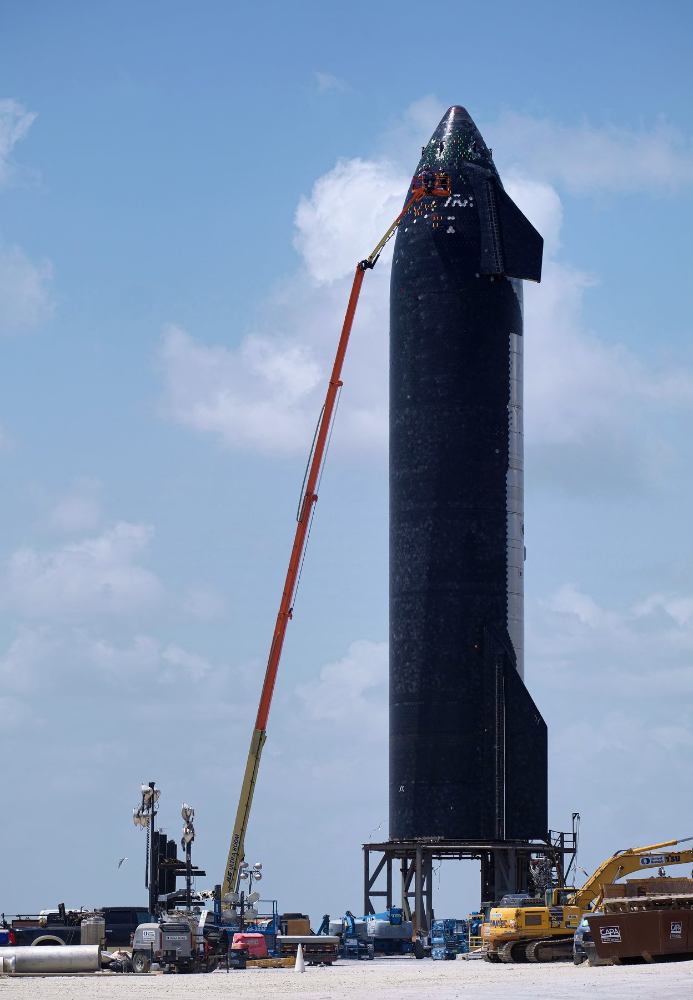
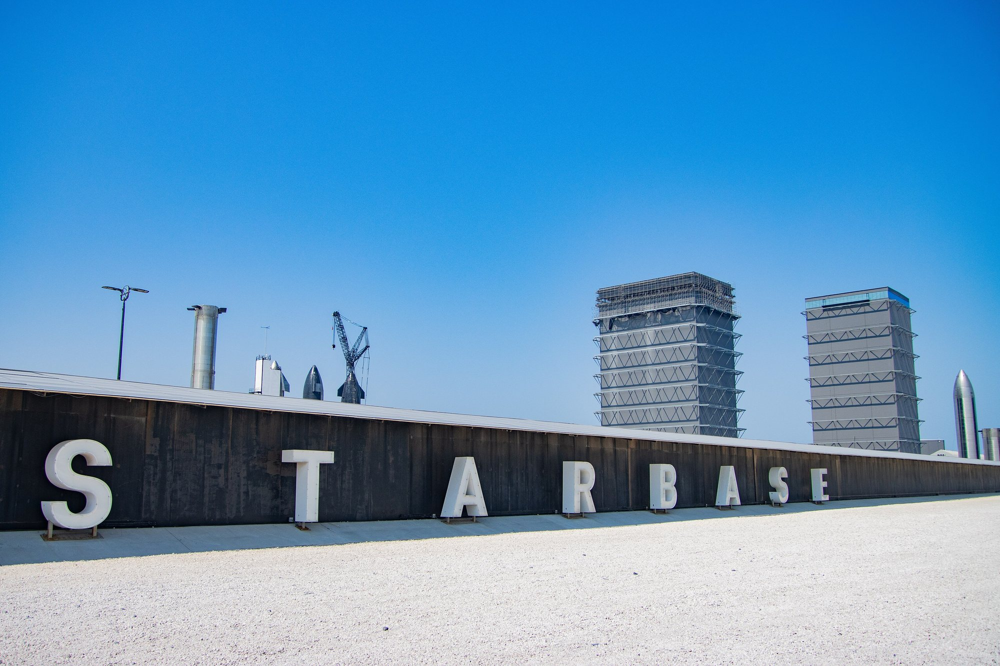

Il 7 ottobre 2026, di prima mattina, Ship 40 è entrata nel porto di Brownsville, in Texas, distesa sul ponte della nave da trasporto pesante Forte. È lo stadio superiore di Starship che il 24 luglio aveva volato nel Flight 13 e che, dopo un ammaraggio più morbido di qualsiasi altro nella storia del programma, non era affondato. Da quel momento un veicolo progettato per volare e poi sparire in mare è diventato un carico navale: trainato per settimane, ispezionato al largo di Christmas Island, caricato su una nave semisommergibile e riportato dall’altra parte del mondo. Ora è a pochi chilometri da Starbase, il complesso in cui è nato.
Che cosa è arrivato a Brownsville
Ship 40 è una Starship di terza generazione, la versione V3, partita dal Pad 2 di Starbase il 24 luglio alle 22:51 UTC, le 00:51 italiane del 25 luglio, in coppia con il Booster 20. Nel corso del volo ha rilasciato venti Starlink V3 su traiettoria suborbitale, ha riacceso un motore Raptor nello spazio ed è rientrata nell’atmosfera fino all’ammaraggio nell’Oceano Indiano. Tutti gli obiettivi principali del volo erano già raggiunti in quel momento. Il seguito non era previsto da nessun piano di missione: lo scafo, dopo essersi coricato sull’acqua come accade a ogni Ship al termine del volo, non si è spezzato e non è affondato.
Il veicolo arrivato in Texas non è in condizioni da esposizione. Settantacinque giorni fra oceano aperto, traino e traversata hanno lasciato segni evidenti sull’acciaio e sulle piastrelle dello scudo termico. Le immagini scattate al porto mostrano uno scafo annerito e segnato, ma ancora riconoscibile e sostanzialmente integro, sdraiato sul ponte della Forte. Le persone accanto allo scafo danno la misura delle dimensioni di uno stadio superiore di Starship visto da vicino: cinquantadue metri di lunghezza e nove di diametro. È proprio questo stato, con i danni lasciati dal rientro e quelli accumulati dopo, il motivo per cui il veicolo è stato riportato a casa.
Settantacinque giorni in mare
Il 28 luglio Elon Musk annuncia l’invio di una nave per recuperare Starship. Nelle settimane successive il recupero si trasforma in un’operazione navale vera e propria. Uno scafo inossidabile senza chiglia, senza punti di traino pensati per il mare e lungo quanto un palazzo di quindici piani viene trainato a una velocità spesso di uno o due nodi. Il 7 agosto, con il mare in peggioramento, Musk scrive che il recupero «non sembra andare bene». Il 18 agosto, dopo circa ventiquattro giorni in mare, il convoglio porta Ship 40 nelle acque riparate davanti a Christmas Island, territorio australiano nell’Oceano Indiano.
Lì gli ingegneri SpaceX lavorano per alcuni giorni sullo scafo. Il 27 agosto l’azienda annuncia di aver raccolto campioni dello scudo termico e di aver ricavato indicazioni importanti su come il veicolo ha affrontato il rientro, con miglioramenti già previsti sulle Ship future. Lo stesso giorno SpaceX comunica che Starship è stata caricata su una nave semisommergibile per un viaggio di mesi verso Starbase. La nave è la Forte del gruppo olandese Boskalis, lunga oltre duecento metri: per caricare il veicolo abbassa il ponte sotto il livello dell’acqua, lascia che lo scafo galleggi sopra di sé e poi risale sollevandolo. A fine agosto lascia Christmas Island diretta in Texas.
La traversata si chiude il 7 ottobre a Brownsville, dopo un percorso stimato in oltre dodicimila miglia nautiche. Il porto si trova a una trentina di chilometri da Starbase, lungo il canale navigabile che collega la città al Golfo del Messico. Fotografi e appassionati della zona si sono radunati sulle banchine fin dalle prime ore del mattino per vedere arrivare il veicolo.
| Data | Fase | Che cosa succede |
|---|---|---|
| 24 luglio | Flight 13 | Decollo alle 22:51 UTC dal Pad 2 di Starbase; ammaraggio morbido nell’Oceano Indiano |
| 28 luglio | Decisione | Musk annuncia l’invio di una nave per recuperare la Ship rimasta a galla |
| 7 agosto | Traino | Mare grosso; SpaceX pubblica immagini dal ponte, Musk definisce il recupero difficile |
| 18 agosto | Christmas Island | Dopo circa 24 giorni lo scafo raggiunge acque riparate; arrivano gli ingegneri |
| 27 agosto | Ispezione e carico | Campioni dello scudo termico; Ship 40 sistemata su una nave semisommergibile |
| fine agosto | Partenza | La Forte lascia Christmas Island diretta in Texas |
| 7 ottobre | Arrivo | Ship 40 entra nel porto di Brownsville, vicino a Starbase |

Che cosa cercheranno gli ingegneri
Il valore di Ship 40 sta nel fatto che è un oggetto fisico, non un insieme di dati. Durante il volo la telemetria registra temperature, pressioni e stato dei sistemi; le telecamere di bordo mostrano il plasma intorno allo scafo e il comportamento dei flap. Ma nessun sensore sostituisce la possibilità di toccare una piastrella, misurarne lo spessore residuo, osservare come si è staccata la colla sottostante o come ha reagito l’acciaio nei punti in cui lo scudo ha ceduto. Prima di questo recupero ogni Ship rientrata dallo spazio era andata distrutta in mare, e con essa la prova materiale di ciò che era accaduto.
Il lavoro atteso a Starbase segue una logica nota nell’ingegneria aerospaziale. Lo scafo andrà smontato, scansionato e confrontato con i dati di volo e con i modelli usati in fase di progetto. Le zone più interessanti sono quelle già emerse durante il volo: le immagini riprese dallo spazio e dai droni dopo l’ammaraggio avevano mostrato uno scudo in gran parte intatto, con perdite di piastrelle e danni nella parte posteriore nati già durante la salita. Capire quali danni risalgono al rientro e quali alle settimane in acqua salata sarà una parte delicata dell’analisi. Il mare non è un ambiente neutro: corrosione, urti durante il traino e lavaggio continuo delle onde hanno modificato lo stato del veicolo dopo l’ammaraggio.
È una valutazione di redazione, non un annuncio di SpaceX: Ship 40 non è destinata a volare di nuovo. Settimane di immersione e una traversata oceanica bastano a escludere un riutilizzo prudente di un veicolo sperimentale. Il suo contributo al riuso è indiretto ma concreto: ogni piastrella esaminata dice qualcosa su come costruire, fissare e ispezionare quelle delle Ship successive. Che cosa ne sarà dello scafo dopo le analisi, che sia smontato, conservato o esposto, al momento non è stato comunicato.

Perché conta per il riuso di Starship
L’obiettivo dichiarato di SpaceX è rendere Starship completamente riutilizzabile, come oggi lo è il primo stadio del Falcon 9 ma con un passo in più: recuperare anche lo stadio superiore, l’elemento più difficile perché rientra dall’orbita a velocità molto più alte e deve sopravvivere a un riscaldamento estremo. Il traguardo finale è catturare la Ship con i bracci della torre di lancio, come già avviene per il Super Heavy, ispezionarla rapidamente e farla ripartire. Senza uno scudo termico capace di superare più rientri con una manutenzione minima, questo obiettivo resta fuori portata.
In questo percorso Ship 40 occupa un posto particolare. Il Flight 14 del 28 settembre ha portato per la prima volta una Starship in orbita e ha rilasciato ventisei Starlink V3, ma la Ship 41 si è rovesciata ed è esplosa dopo l’ammaraggio nel Pacifico. Il risultato orbitale è stato raggiunto, il veicolo non è stato recuperato. Ship 40 resta quindi l’unico stadio superiore di Starship rientrato dallo spazio e riportato a terra intero. È un campione unico, arrivato per una combinazione di ammaraggio morbido, fortuna del galleggiamento e testardaggine nel recupero, che le prossime Ship dovranno rendere inutile tornando a casa da sole.
Lo stesso giorno dell’arrivo, Starbase e il centro prove di McGregor hanno mostrato l’altra faccia del programma, quella che guarda avanti. A McGregor un Raptor ha completato un’accensione di 557 secondi sul banco nord, tra le più lunghe mai registrate nel sito. A Starbase i bracci della torre del Pad 2 hanno ripetuto lunghe sequenze di movimento, le prove che precedono le operazioni con i veicoli. Mentre un veicolo del passato torna per essere studiato, la catena che dovrà produrre i successivi continua a girare.

Che cosa aspettarsi adesso
Nelle prossime settimane i segnali da seguire sono tre. Il primo è un comunicato SpaceX sull’arrivo, con immagini ufficiali dello scafo e indicazioni sulle analisi. Il secondo riguarda gli spostamenti del veicolo: dal porto a Starbase e poi all’interno del complesso, dove il trasporto di un oggetto di cinquantadue metri non passa inosservato. Il terzo, più lento, sono i risultati: miglioramenti allo scudo termico, ai flap e agli attacchi delle piastrelle annunciati per le Ship successive, che permetteranno di misurare quanto questo recupero sia servito davvero.
Intanto il calendario SpaceX resta fitto. Il lancio della quarta missione Tranche 1 dello Space Development Agency da Vandenberg è stato rinviato a non prima del 10 ottobre; la missione cargo CRS-35 verso la Stazione Spaziale è indicata non prima del 13 ottobre; oggi, 8 ottobre, è previsto alle 17:34 italiane l’ammaraggio nel Pacifico di Dragon Freedom con l’equipaggio di Crew-12. La breaking news dedicata al ritorno di Crew-12 passa all’archivio Notizie: questa pagina mette in primo piano la storia di Ship 40, un veicolo che il programma aveva dato per perso e che invece è tornato a Starbase.
Fonti pubbliche e tracce
Ultimo aggiornamento editoriale: 8 ottobre 2026. Nel corpo non si ripete la fonte a ogni frase: le tracce sono raccolte qui. Le valutazioni sul futuro del veicolo sono indicate nel testo come ipotesi di redazione.
- Florida Today, Brooke Edwards, 7 ottobre 2026: arrivo al porto di Brownsville la mattina del 7 ottobre, primo recupero di una Starship, contesto Flight 13 e Flight 14.
- Aviation Week, Irene Klotz, «Salvaged Starship Returns To Starbase», 7 ottobre 2026: ritorno a Starbase il 7 ottobre per analisi aggiuntive, carico sulla semisommergibile vicino a Christmas Island.
- TeslaNorth, Alex Diaz, 7 ottobre 2026: 75 giorni in mare, nave Forte, stato dello scafo, assenza di un comunicato SpaceX sull’arrivo.
- Jerry Pike su X, 7 ottobre 2026 e «Humans for Scale»: fotografie dell’arrivo per NASASpaceflight.
- Post del 7 ottobre rilanciato da NASASpaceflight: stima di oltre 12.000 miglia nautiche percorse.
- SpaceX su X, 27 agosto 2026: ispezione a Christmas Island, campioni dello scudo termico, miglioramenti previsti; post sul carico sulla nave semisommergibile.
- SpaceX su X, 18 agosto 2026: arrivo al largo di Christmas Island dopo circa 24 giorni in mare.
- NASASpaceflight, Chris Bergin, 18 agosto 2026: stato dello scudo termico dalle immagini di volo e dei droni, obiettivo del ritorno a Starbase.
- MarineRadar, 29 agosto 2026: la Forte di Boskalis lascia Christmas Island diretta a Brownsville; procedura di carico.
- NASASpaceflight su X, 7 ottobre 2026: accensione Raptor di 557 secondi sul banco nord di McGregor.
- SpaceX su X, 8 ottobre 2026: missione SDA Tranche 1 rinviata a non prima del 10 ottobre. NASA, copertura CRS-35: lancio non prima del 13 ottobre.
- Dossier del sito: scheda Flight 13, Ship 40 a Christmas Island (18 agosto), resoconto Flight 14.
Fotografie utilizzabili
Le tre fotografie provengono da Wikimedia Commons e sono riutilizzabili con le licenze indicate in didascalia: pubblico dominio per la foto di Ship 39 (opera del governo federale USA, nessuna approvazione del sito implicata), CC BY-SA 2.0 per la foto di Lars Plougmann e CC BY-SA 4.0 per quella di Jenny Hautmann, con attribuzione e link alla licenza. Le versioni del sito sono solo ridimensionate. Sono immagini d’archivio: nessuna ritrae Ship 40 al suo arrivo, perché le fotografie dell’arrivo non sono pubblicate con licenza libera. Dettagli in assets_ship40_ritorno/crediti_immagini.md.
Apri il dossier Crew-12 archiviato · Archivio Notizie · Torna a SpaceX